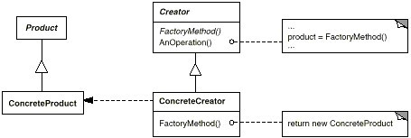

意图：
定义一个用于创建对象的接口，让子类决定实例化哪一个类。 Factory Method使一个类的实例化延迟到其子类。
别名：
虚构造器（Virtual Constructor）
结构：

-
Product
— 定义工厂方法所创建的对象的接口。 -
ConcreteProduct
— 实现Productt接口。 -
Creator
— 声明工厂方法，该方法返回一个 Product类型的对象。Creator也可以定义一个工厂方法的缺省实现，它返回一个缺省的 ConcreteProduct对象。 -
ConcreteProduct对象
— 可以调用工厂方法以创建一个Product对象。 -
ConcreteCreator
— 重定义工厂方法以返回一个ConcreteProduct实例。
代码示例：
Creator类
public abstract class Creator {
protected abstract Product factoryMethod();
public void anOperation() {
Product product = factoryMethod();
//do some thing
}
}
ConcreteCreator类
public class ConcreteCreator extends Creator {
@Override
protected Product factoryMethod() {
return new ConcreteProduct();
}
}
问题：
可能仅为了创建适当的 Product对象而迫使你创建Creator子类。
适用性：
- 一个系统要独立于它的产品的创建、组合和表示时。
- 一个系统要由多个产品系列中的一个来配置时。
- 当你要强调一系列相关的产品对象的设计以便进行联合使用时。
- 当你提供一个产品类库，而只想显示它们的接口而不是实现时。
相关模式：
- Abstract Factory经常用工厂方法来实现；
- 工厂方法通常在Template Method中被调用；
- Prototype不需要创建Creator的子类。但是，它们通常要求一个针对Product类的Initialize操作。Creator使用Initialize来初始化对象。而Factory Method不需要这样的操作。